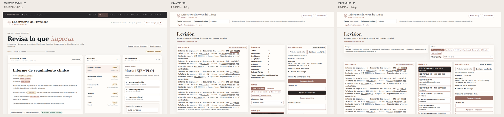
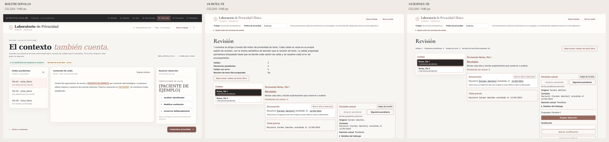
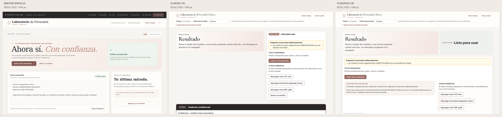

Estado: implementación local, no desplegada. El maestro visual no contiene las mismas 24 detecciones ni todos los estados reales de V4; compara composición, accesibilidad y jerarquía, no un pixel-perfect ni el contenido exacto. No hay datos de pacientes.
Revisión
La franja de Progreso/Filtros concentra controles operativos mientras Documento, Hallazgos e Inspector comparten el primer espacio de trabajo.




Celdas
Resumen compacto y reprocesamiento contextual; la celda activa y su inspector aparecen antes de las explicaciones largas. En móvil se prioriza la decisión.




Resultado
La cabecera une título y estado; el aviso factual, el CTA y el contenido preparado Safe son distinguibles, y los formatos alternativos ocupan su zona secundaria. Auditoría Confidencial mantiene confirmación y sección separada.




Las evidencias funcionales, la matriz de riesgos y las limitaciones del alcance están en README.md. Sin push, PR, merge, despliegue ni cierre del issue #92.